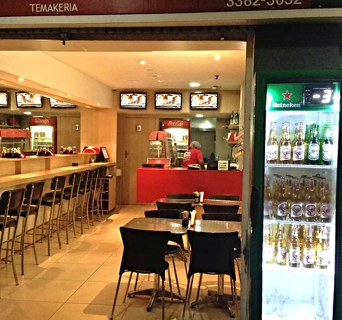
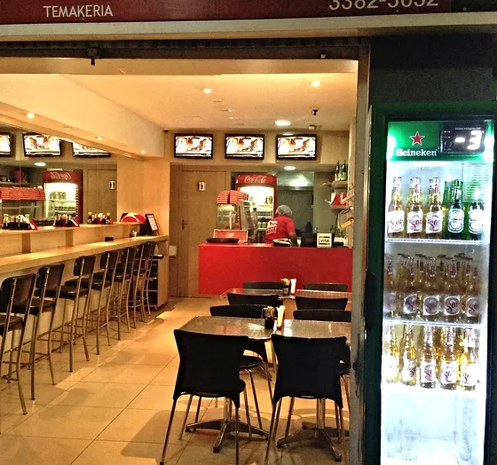

Cuisine Internationale
La région administrative de Guará offre une grande variété de restaurants internationaux. C'est dans les zones commerciales que l'on trouve un grand nombre de restaurants dans la région, allant des restaurants italiens traditionnels aux options exotiques telles que la chinoise, la japonaise et l'arabe. L'offre est diversifiée et multiculturelle, satisfaisant tous les goûts et préférences. Pour les amateurs de cuisine régionale, il y a aussi des options mettant en avant la riche gastronomie brésilienne, avec des plats typiques de différents états. Il en va de même pour les prix, avec des restaurants pour tous les budgets, allant des options plus sophistiquées et gourmet aux établissements plus décontractés et économiques. Certains restaurants proposent des menus spéciaux et des promotions saisonnières, rendant l'expérience encore plus accessible et intéressante. En plus de la diversité culinaire, de nombreux restaurants à Guará offrent des ambiances agréables, avec des décorations thématiques et un service chaleureux. Certains lieux disposent de musique live ou d'événements spéciaux, offrant une expérience plus complète pour tous. D'autres options peuvent être trouvées, et il vaut la peine d'explorer les restaurants à Guará et ses environs, pour leur diversité et leur qualité. N'oubliez pas de visiter également les marchés locaux et les foires gastronomiques qui ont lieu fréquemment dans la région, offrant encore plus d'alternatives pour ceux qui souhaitent découvrir de nouvelles saveurs.
Asiatique
La cuisine asiatique est bien représentée à Guará avec des plats typiques de Chine et du Japon.
Le restaurant chinois China Yong Xiang, situé à SRIA II (Polo de Moda) - Guará, Brasília - DF, 71070-040,
propose une grande variété de plats authentiques de Chine.
En plus d'un menu diversifié, l'ambiance du restaurant offre une expérience chaleureuse,
avec une décoration évoquant la culture chinoise et un service attentionné.
Si vous recherchez du sushi ou du sashimi, il y a des options de cuisine japonaise à Guará qui méritent d'être soulignées.
Aki Temakeria, situé à Qe 30 Conj Q Lote 2, Guará II Vila Gourmet, Brasília - DF, 71065-170,
est connu pour ses temakis frais et délicieux, préparés avec des ingrédients de haute qualité.
L'ambiance détendue et moderne fait de cet endroit un lieu idéal pour un repas décontracté, avec une variété d'options
de sushi et de plats chauds.
Une autre excellente option est Sushi Gourmet, situé à QE 15 Q 2 Conj. D 4595 - Guará - Brasília - DF, 71050-161.
Ce restaurant est célèbre pour son sushi frais et bien présenté, avec une sélection comprenant des nigiris, makis et sashimis.
La décoration élégante et le service personnalisé font de Sushi Gourmet un lieu populaire pour des repas informels
ainsi que pour des occasions spéciales.
En plus de la variété des plats, ces restaurants offrent un environnement qui complète l'expérience gastronomique,
avec des options pour tous les goûts et budgets. Explorer la scène culinaire asiatique à Guará est un excellent moyen
de savourer des saveurs authentiques et de découvrir la richesse des cultures culinaires orientales.
 


Italien
Guará propose également des options pour ceux qui aiment la cuisine en provenance directe du vieux continent,
avec un accent sur la célèbre cuisine italienne. Au restaurant Abbraccio, situé au Park Shopping, en SMAS Trecho 1 - Guará, Brasília - DF, 71219-900,
vous trouverez une variété de plats italiens classiques, tels que des pâtes fraîches et des risottos. L'ambiance de l'Abbraccio est élégante et accueillante,
avec une décoration qui rappelle le charme des trattorias italiennes, et un service qui met l'accent sur la qualité et l'attention au client.
Pour les amateurs de douceurs et de desserts, la glacerie Bacio di Latte, également au Park Shopping, offre une expérience irrésistible avec ses gelatos artisanaux.
Située dans le même centre commercial, Bacio di Latte est connue pour sa sélection de saveurs intenses et de textures crémeuses, préparées avec des ingrédients frais et de haute qualité.
L'ambiance de la glacerie est moderne et sophistiquée, offrant un espace agréable pour déguster un délicieux dessert après les courses ou un repas.
Ces lieux apportent non seulement un morceau d'Italie à Guará, mais offrent également une expérience gastronomique complète,
avec des plats et des desserts qui ravissent autant par leur goût que par leur ambiance.
Visiter Abbraccio et Bacio di Latte est une excellente manière de découvrir le meilleur de la cuisine italienne au cœur de Brasília.


Arabe
Si vous avez envie d'une vraie cuisine arabe, Hassan Lanches Iranianos est un excellent choix.
Hassan, un Iranien vivant au Brésil depuis plus de 15 ans, a lancé son entreprise spécialisée dans les plats arabes
avec l'intention de partager les traditions culinaires du Moyen-Orient.
Située à QE 30, à Guará 2, sa sandwicherie propose une variété de plats authentiques, préparés avec des recettes traditionnelles et des ingrédients frais.
L'ambiance est informelle et accueillante, reflétant l'hospitalité arabe, et Hassan est également connu pour son service amical et personnalisé,
garantissant une expérience gastronomique authentique et mémorable.
Mexicain
La célèbre et épicée gastronomie mexicaine est également présente à Guará, avec Nacho Man, situé à Guará II QI 29 CI Cl Guará Shopping, qui propose divers plats mettant en avant la riche culture du Mexique. Le restaurant mexicain Nacho Man a pour but de promouvoir la culture mexicaine auprès des habitants de Brasília. Et ainsi le restaurant apporte les saveurs les plus authentiques de la cuisine mexicaine. L'attention portée à la qualité et à l'originalité des plats a poussé les associés à fabriquer leurs propres tortillas artisanales. Et ce n'est pas tout: aujourd'hui Nacho Man cultive des piments mexicains exotiques et prépare ses propres sauces. Tout est fait avec beaucoup de dévouement, de sérieux et d'amour. C'est le genre de chose qui fait toute la différence en termes de goût, offrant une expérience véritablement unique.
Visite Virtuelle Guidée du Restaurant Nacho Man
Vous pouvez voir une vidéo montrant l'établissement en cliquant sur le lien suivant: Visite virtuelle de Nacho Man
Revenir en haut